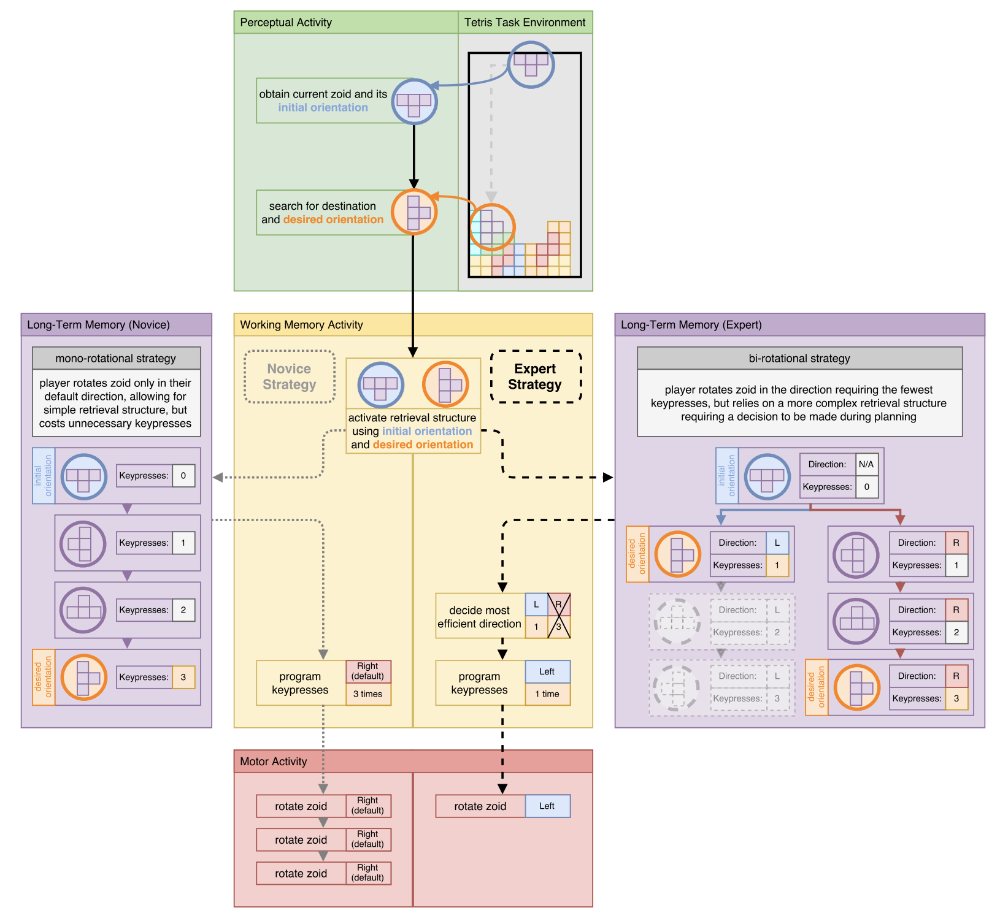

Everyone Should Play Games
Table of Contents
Everybody Should Play Games
Those of you who regularly read my writing know that I am extremely fond of games. Specifically, that I'm one of those weird guys who "plays games seriously", and will regularly do frowned-upon things like practicing or studying games in order to get better at them. I find this fun, and pretty much always have.
I think it would still be okay if this was just a hobby of mine, where I spent idle free time trying to "become good" at games instead of watching Netflix or something. But I think that over many years, playing games has provided me with a directly very useful framework for learning things in general, and I thought it would be interesting to dig into some of the more generally applicable insights1.
Learning French vs Learning Scrabble
Nigel Richards is the uncontested GOAT of Scrabble. At the time of writing he is one of three players with a rating over 2100, where he is about 50 points away from second place, Adam Logan, who is himself a generationally talented scrabble Grandmaster / former World Champion / Putnam fellow mathematician etc.
There is an oft-repeated story about Nigel Richards. Apparently, playing Scrabble in his native language was too easy. In 2015, Richards spent 9 weeks studying a french dictionary, and then won the French Scrabble World Championship despite not actually knowing how to speak French. He memorized 360,000 words, at the rate of over 5700 words per day.
People often point to this story to fawn over Nigel Richards being an incomprehensible genius. But what I really love about this story is that Nigel Richards managed to learn a six-digit amount of French words without emerging from that experience knowing how to speak French. To me there is something fundamental about playing to win which can be learned here: let's call it "learning too much French".
If you woke up one day and decide that you wanted to get as good as possible at French-language scrabble, it would be extremely hard to avoid the pitfall of trying to learn French. The naive way to work on this would be to get some French textbooks and start learning the language. Imagine you were the most brilliant language learner of all time. How far would you get in nine weeks? If you're amazing at learning languages, maybe you could get to a point where you could play Scrabble as well as a French fourth grader. That's an extremely unrealistic target as is, and would be worthless for winning the French Scrabble World Championship. You have spent too much time learning French.
You don't need grammar, pronunciation, listening, communication, or the majority of skills commonly associated with learning a new language. You are not learning a new language; you are trying to win the World Championships in Scrabble. All you need to know is whether some string of tiles is a legal word in French. You get a hold of an anki deck with the 21k most common French words and you begin learning raw vocab and nothing else. This is so much more efficient than learning with a textbook, you think. In 9 weeks you could definitely learn thousands of these things if there's no need to learn how to use them to communicate.
Except, hold on, you're still learning too much French. If you learn the 21 thousand most common French words, you could probably identify what signs say, you probably could communicate with great difficulty and poor pronunciation. Critically, you are learning a list sorted by frequency in spoken language. Naively, it seems like these are the words most likely to be played in scrabble, and you vaguely feel like you need to be able to spot your opponent using a phoney word. If you learned French scrabble this way, with some good strategy you could probably defeat the median French speaker who doesn't play Scrabble competitively. But if you are Nigel Richards, you don't care about that.
In fact, you don't care about knowing any amount of French, you don't care about the meaning of words, you don't care how common they are, you place zero value on any semantic content of the words whatsoever. You aren't trying to win a home game with your French friends, you are trying to win the World Championships using your superior skill at the English version at the game. You need to know the most valuable words, you need to know the words most likely to appear with the tiles available, you really need to know all possible legal 2- and 3- letter words in French Scrabble. You need to roughly be able to look at a word and determine "real or fake". In some ways it's like you're a Scrabble Generative Adversarial Network; there's a little minimax game where you have to generate a word, and then discriminate a word being real or fake. At no point do you need any semantic content of the words you are playing. You don't need to be able to say the words you are playing, or know what they sound like. You don't need to be able to read a French roadsign. You just need to know how to win at Scrabble, using French words.
Understanding what things are Learning French and what things are Learning Scrabble is extremely valuable.
Low Elo Strategy is Still Strategy
When I was in Middle School, I was really into Chess. Chess was the first game I ever tried to get really good at, but since I was a completely self-taught middle schooler, there were a lot of lessons about getting good at things which I had to slowly learn one at a time.
One such lesson that I remembered was the first time I ever played blindfold chess. Our coach had recently watched Knights of the South Bronx which contains a scene where the coach makes all the kids play chess blindfolded to improve their board visualization. So, naturally, we all had to play blindfolded to improve our board visualization2.
At the time I was one of the highest rated players in the club (which was not too impressive, I was like 1100 or so at this point in middle school) and I tried to win by playing a normal chess game where I visualized the entire board in my head and won normally3. But there was a problem: attempting two illegal moves would make you immediately lose the match4. The majority of the problem here was that we were not all that strong at algebraic notation, so if we said "Knight f3" but we were playing black (intending Knight f6) we would just immediately lose.
I did pretty well in this tournament mostly by virtue of being able to last more moves before making a mistake. But I got obliterated by the one kid who won the tournament, who would get castled as fast as possible using a fianchetto and then move his king back and forth every single turn until he was checkmated or his opponent made an illegal move. We were all bad, so none of us could realistically checkmate a fianchetto while blindfolded even with no resistance. That kid went undefeated, and the chess coach was so disappointed that we never played blindfold chess ever again.
I remember feeling frustration for a brief period that I lost to something so "cheap", something so obviously performed by somebody with no interest in actually being good at the thing we were supposed to be practicing. But as I grew as a player/competitor, it stuck with me as an example of needing to beat a baseline strategy formed by somebody who doesn't care about being good at the "proper thing". Often all you need is a basic strategy for winning the game in front of you: sometimes linear regression works as well as a deep neural network. Castling and then moving back and forth obviously will not scale to defeating competent blindfold chess players, but it's important to recognize that the low Elo meta is not just the scaled down version of the high Elo meta: conditioning on the skill of the players changes the expected value of particular strategies. When should you use one vs the other?
Cognitive Speed Bumps
A paper I talk about at any opportunity is Lindstedt and Gray's The “cognitive speed-bump”: How world champion Tetris players trade milliseconds for seconds.
Imagine you are playing Tetris, and you have a piece you need to rotate into a specific orientation. There are two basic "strategies" you could learn for this situation. First, you could take a moment to identify "Should I rotate right, left, or 180 degrees", and then apply that rotation. Second, you could identify "I need to rotate", apply one rotation to the right/left, and then repeat until you get the right orientation.
If you write out the strategies like this, it sounds extremely stupid. Obviously the first strategy is much better. Very strong players use something called finesse to learn exactly the optimal sequence of inputs to place any piece anywhere on the playfield with the fewest number of inputs. It is of critical importance to place pieces efficiently in order to go fast, so just rotating one direction will add a fractional number of useless rotations every piece.
This is sort of at odds with how every new Tetris 40 lines grinder learns to play Tetris. It is extremely, extremely common for intermediate players to use the mono-rotational strategy, despite all the top players using the bidirectional rotation strategy5. This seems very unusual, why is that? Why don't they all learn the better strategy?

Lindstedt and Gray argue that the mono-rotational strategy is a very simple perceptual task, which sometimes incurs inefficient extra keypresses. In comparison, the bi-rotational strategy is a complex perceptual task, which rewards you with fewer keypresses. The cool finding here is that the intermediate players who use the mono-rotational strategy actually input their first rotation faster than the very good players doing their one rotation. A complex reaction is immutably slower than a simple reaction, even if the player is much better. Hick's Law describes this as a logarithmic relationship, and it seems to still apply here with the additional skill level confound6.
In plain English, you want to switch from mono-rotation to bi-rotation when the cost of picking your rotation's direction becomes smaller than the cost of doing ~0.5 wasted rotations per piece7.
It introduces a weird sort of puzzle: how do you improve to the high-skill, efficient strategy if doing so is strictly worse until some threshold is passed? The answer is that you have to stop trying to win at Tetris. Your new goal is to win at bi-directional rotation.
It does not make sense to work on this below a certain skill threshold. The time cost of 0.5 rotations per piece is dwarfed by the time cost of not knowing where to place your piece in the first place. But, eventually, there will come a time where eliminating the time cost of mono-rotation is the most likely spot to make improvements to your game. When this time comes, you need to stop caring about winning at Tetris, and start caring about winning at bi-directional rotation. This will make you worse at Tetris, but you are not allowed to complain, because you are not trying to win at Tetris anymore, you are trying to win at bi-directional rotation. Your hope is that you will win at this so hard that it will turn back into trying to win at Tetris.
I see people make mistakes on learning things like this in both directions: people who make beautiful "correct" optimizations before just "learning the game"8, and people unwilling to switch to a high-skill complex strategy because it harms their ability to win in the short term.
A lot of people like to break these apart into "playing to win" and "playing to learn" but I find that usually comes across as sneering at people who defeat them9. What I think is more helpful is breaking this into "playing to win (match)" and "playing to win (new thing)". There's not really any difference between these two things, other than changing the definition of "win" to something other than the win screen. Being unable to commit to a period of losses in exchange for acquiring a higher-skill ability, interestingly, is like being too attached to winning to be able to play to win.
The Thing (TT)
The point I'm circling with all of this is that in general I think it's really common for people to incorrectly identify The Thing10. The Thing (TT) here refers to whatever you are currently actually trying to optimize, The Thing you are really trying to become good at. Sometimes TT is the win screen, sometimes TT is doing something hard in a spot you normally do something easy, sometimes TT is learning a new language, sometimes TT is not giving a fuck about the language since it interferes with learning Scrabble.
The reason I think everybody should play games is that playing games gives you lots of opportunities where TT is extremely clear and visible, compared to noisier situations where identifying it is a lot more difficult. A fun example is Ivy League student-athletes, who tend to have lower grades and test scores but tend to emerge with equivalent or superior career outcomes compared to their non-athlete counterparts11 , 12. Being able to identify your own shortcomings, identifying a path to improving those things, and then putting in a lot of effort on those things is like a little cluster of agency superpowers that can be both learned and taught to improve your outcomes substantially13. All downstream from the framework necessary to learn for winning at games.
Overall I don't think the above is too different from the standard western cultural perspective on the value of sports14, just slightly adapted to our golden era of games, where that experience is increasingly accessible to everyone. Stuff like trusting your teammates and improving your weaknesses are bog-standard "jock lessons" which can now be deeply learned by anybody able to operate a computer. I think there's some value in that.
Footnotes:
I don't think I'll go so far as to say "I am defending the productivity value of playing games", this is not a Linkedin post.
Chess club was weird in a lot of ways like this. I remember another time where he printed out 200 copies of the lyrics of Natasha Bedingfield's "Unwritten", and gave them to all of us to "inspire us". I think there was some sort of lesson about never giving up? I'm reading back the lyrics and it's even weirder than I remember that he tried to make this our club's fight song for a short period.
This is not remarkable, it's more or less what people just do when they are good at blindfold chess. I was a dumb 12 year old child though, so maybe this was a bit of unfounded optimism on my part.
I believe this is the actual rule from competitive blindfold chess tournaments, which we were using for this exercise for some unusual reason.
I briefly played some NullpoMino and the now-defunct Tetris Friends when I was in high school, and I got to a ~55 second 40 lines time using an explicitly mono-rotational strategy.
This is a surprisingly cool finding: getting really good at a complex reaction doesn't turn it into "a simple reaction", it just makes it a faster complex reaction.
0.5 rotations per piece is maybe not exactly right, since some pieces have only 1 or 2 orientations. It makes sense to use this for the T, L, and J pieces, where you save 2 rotations on 1 of the 4 orientations. The paper finds the mono-rotational users make something like 0.7 extra rotations per piece, which probably includes some errors on the other pieces also.
i.e. doing bidirectional rotation but taking a long time to place each piece, learning advanced jc shine tech skill with Fox in SSBM without being able to dash dance well, etc.
"You will never get better and I will be better soon, because I'm playing to learn and you're just playing to win" and its variants.
I stole this phrase from May's Marth vs Peach guide, where it refers to backwards-facing powershielding a turnip into down air. Here it doesn't exactly refer to the same thing, but I like the acronym so I'm stealing it.
Unsurprisingly there's a lot of snark about student-athletes at these sorts of schools, which has always really bothered me; student-athletes often have way busier schedules both in high school and in college, and are usually exhausted half the time, it's not very surprising that they often have lower measured performance even if they are equivalently bright to a non-athlete student. Most of the student-athletes I met in college were hard-working lunatics just like all the other students.
A lot of people claim this is just because of the athletes' network but I think that is mostly coping.
If you take the Academic Index at face value, you could claim this was at least one standard deviation.
Everything in the world is exactly the same. Luka Doncic is a top 500 Overwatch 2 player.